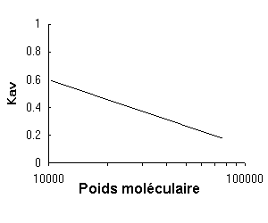

La chromatographie par filtration sur gel
Une large gamme de molécules biologiques peuvent être séparées selon les différences de la taille et la forme, les paramètres responsable de leur capacité de penetration des matrices poreuses. Cette procédure est nommé la chromatographie sur tamis moléculaire, ou la chromatographie d'exclusion moléculaire. Une série de matrices poreuses peut être utilisée en fonction de la nature des molécules d'être fractionnée. Afin de la purification de protéines, généralement la matrice est composé de billes poreuses d'un gel inerte et fortement hydraté, et souvant le méthode s'appele la filtration sur gel.
Matrices de gel sont commercialement disponibles sont Sephadex (perles de dextrane), Sepharose, Bio-Gel A (agarose) et Bio-Gel P (polyacrylamide), tandis que d'autres matériaux tels que les polystyrènes et des formes diverses de polyacryloylmorpholine ont également été utilisés. Le dextrane, l'agarose et des perles de gel de polyacrylamide peuvent tous être élaborés sous formes de porosité différentes pour fractionner les protéines de tailles variables. Le gels de dextran de Sephadex et de Bio-Gel P de polyacrylamide permettent la fractionnement une protéine globulaire au poids moléculaire d'environ 800.000, alors que les gels d'agarose, en raison de leur porosité plus grande, permet de séparer les molécules de protéine et les complexes macromoléculaires de poids moléculaire jusqu'à plusieurs millions. Plus récemment, gels du dextrane réticulé (Sephacryl) ont été commercialisés qui sont exceptionnellement rigides; ces matrices stables peuvent fractionner les protéines de poids moléculaires jusqu'à 8 millions. La rigidité et la stabilité des gels de polyacrylamide peut être améliorée par l'addition d'agarose dans la matrice de gel. Les gels de polyacrylamide/agarose de ce type sont également disponibles dans commercialement (Ultrogel). De nouveaux types de gels commerciales sont toujours en train d'être élaborés. Le tableau ci-dessous résume les propriétés des matrices utilisées dans ce programme.
Les caractéristiques des médias de filtration sur gel utilisés dans cette simulation.
|
|
Fourchette de fractionnement approximative des peptides et protéines globulaires (poids moléculaire) |
| Sephadex G-50¹ | dextrane | 1500 - 30000 |
| Sephadex G-100¹ | dextrane | 4000 - 150000 |
| Sephacryl S-200 HR¹ | dextrane/acrylamide | 5000 - 250000 |
| Ultrogel AcA 54² | polyacrylamide/agarose | 6000 - 70000 |
| Ultrogel AcA 44² | polyacrylamide/agarose | 12000 - 130000 |
| Ultrogel AcA 34² | polyacrylamide/agarose | 20000 - 400000 |
| Bio-Gel P-60³ | polyacrylamide | 3000 - 60000 |
| Bio Gel P-150³ | polyacrylamide | 15000 - 150000 |
| Bio-Gel P-300³ | polyacrylamide | 60000 - 400000 |
¹ Sephadex® et Sephacryl® sont des marques déposées de GE Healthcare Bio-Sciences AB.
² Ultrogel® est une marque déposée de BF Biotechnics, Inc.
³ Bio Gel® est une marque déposée de Bio-Rad Laboratories, Inc.
Le fractionnement d'un mélange de protéine par filtration sur gel est généralement réalisé de cette manière: les billes de gel, sous forme d'une suspension dans le tampon choisi, sont versés dans une colonne chromatographique en verre ou en plastique de dimensions appropriées, et elles sont laissées à régler par gravité. Après le lavage et d'équilibrage de la colonne avec le tampon seul, le mélange de protéines dans le tampon est introduit à la tête de la colonne, et l'éluat est recueilli à la base de la colonne comme une série de fractions. En traversant la colonne, les protéines pénètrent les pores de billes de gel plus au moins selon leur taille différentes, dont elles traversent la colonne à des vitesses différentes. Toutes les protéines qui dépassent la taille maximale des pores seront incapables d'entrer dans les perles. Ces protéines donc ne distribuent que dans la solution entre les billes et l'éluent de la première colonne dans le «volume d'exclusion» (le volume mort). Toutes les protéines en dessous de la taille minimale des pores équilibrent complètement dans le tampon à l'intérieur et à l'extérieur des billes de gel, et donc elles peuvent se trouver d'une part de temps à l'intérieur des perles. Ces protéines donc migrent plus lentement à travers la colonne et seront les dernières d'être éluées, ainsi que des autres petites molécules présentes dans le mélange de protéines d'origine tels que les ions de sel. Le volume total de la colonne est appelé le volume du lit. Par conséquent, ces protéines seront éluées dans un volume de tampon très proche du volume du lit de la colonne (bien qu'un peu moins en raison du volume physique occupé par la matrice du gel elle-même). Les tailles des pores dans les billes ne soront pas exactement identiques mais néanmoins elles existent dans une fourchette assez étroite. Certaines protéines ont de tailles très similaires à la fourchette de taille de pores et donc elles seront excluses de certains pores, tout en entrant dans les autres. Ces protéines de taille intermédiaire seront donc en partie excluses de perles selon leurs tailles et leurs formes. Elles éluent de la colonne selon leurs poids moléculaires, les plus grandes premièrement, suivies par les plus petites.
Un choix judicieux de type de gel est important pour le fractionnement optimal de mélanges de complexes protéines. L'utilisation d'un gel de type inapproprié pourrait exclure la protéine d'intérêt de billes de gel, en éluant avec de nombreuses autres protéines dans le volume mort, ou, au contraire, il pourrait laisser équilibrer les proteines dans le volume du gel et donc elle pourraient éluer avec plusieurs autres protéines de la fraction de sel près du volume de lit. Dans les deux cas la résolution du fractionnement n'est pas bien definie. Idéalement la taille des pores de gel doit être telle que la protéine souhaitée est en partie excluse des billes de gel; ces conditions garantient un fractionnement de types de protéines le plus efficace. Concernant les protéines partiellement excluses, un graphique de log (poids moléculaire de la protéine) par rapport à Kav, donne une courbe linéaire, où
|
|
Kav |
= |
volume d'élution - volume mort |
Une relation linéaire entre Kav et log (poids moléculaire)

Ainsi, une colonne peut être calibrée avec des protéines standardes de poids moléculaires connus, en notant leurs volumes d'élution, et ces données utilisées pour établir un tel graphique. Par la suite, pendant le fractionnement du mélange de protéines dans la même colonne, la mesure du volume d'élution de la protéine d'intérêt permet deduire son poids moléculaire par rapport à la courbe standarde. Toutefois, il faut comprendre que la forme de molécules de protéines joue également un rôle important dans la filtration sur gel. Les polypeptides et des protéines de longues tendent à se comporter comme si elles sont plus grandes, comme les molécules de protéines globulaires. Par conséquent, la courbe d'étalonnage n'est aussi précise que la nature de protéines standardes utilisées pour la construire permettra.
Lors de la première application de filtration sur gel pour toute la purification des protéines en question, il est de bonne pratique de fractionner le mélange de protéines sur plusieurs matrices de gel de porosité différente, de recueillir les fractions et de mésurer chaqu'une en teneur de protéines et d'activité enzymatique. Empiriquement, on peut choisir alors une matrice qui donne une bonne résolution de la protéine souhaitée des autres protéines, tout en donnant également des informations de son poids moléculaire - les données qui peuvent s'avérer extrêmement utiles aux étapes ultérieures de la purification.